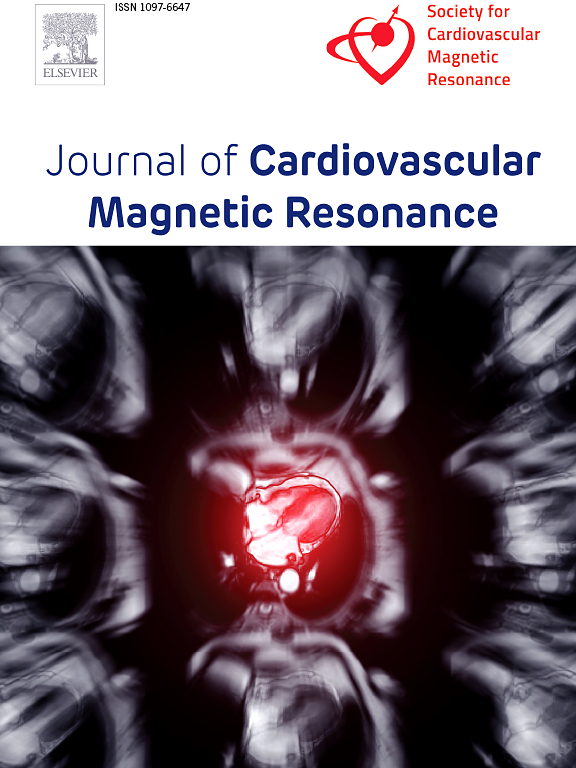
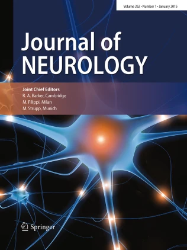
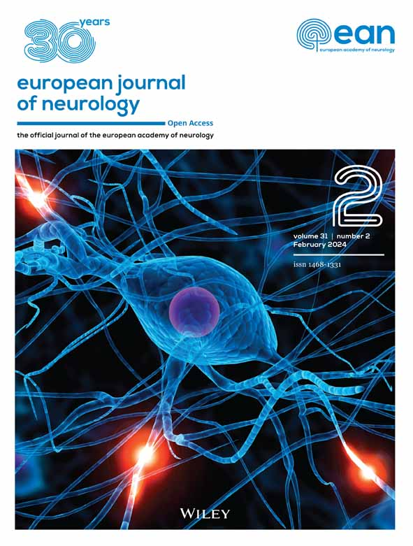
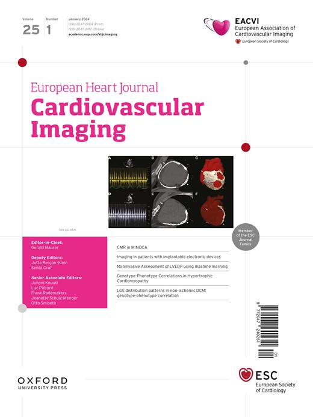
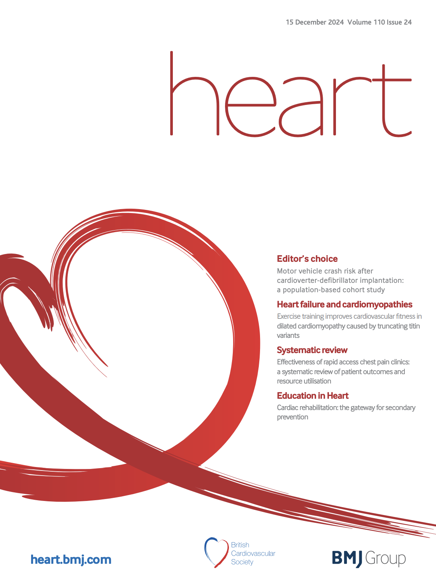
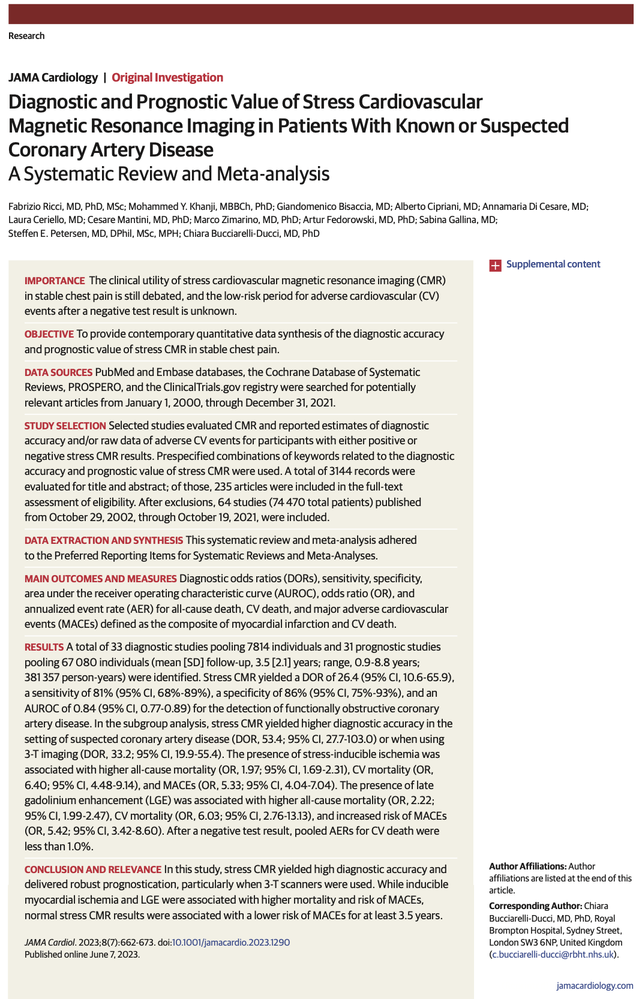
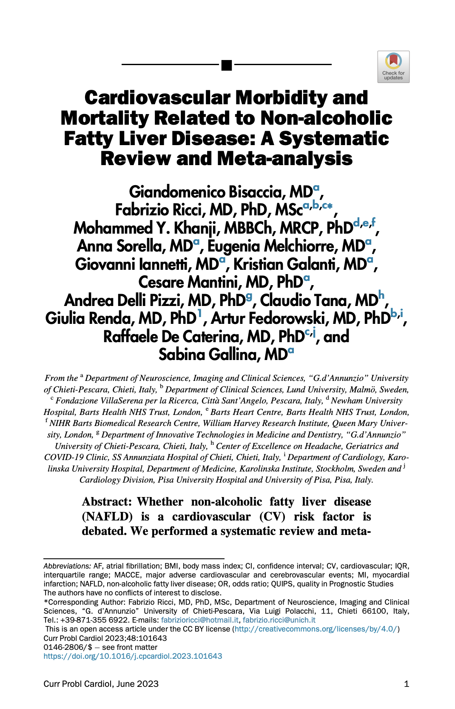

G. Bisaccia, MD, PhD
A selection of my peer-reviewed work. My full publication record is on ORCID.







![]()